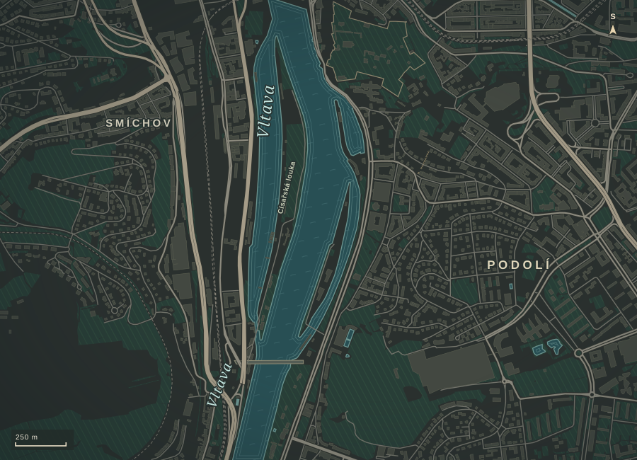

Nad Sokolovnou 3 / Praha
Podolí
shora.
+Horní úroveň mezonetu+
Osobní výtah
05NP
Zvolte podlaží
Kabina v 5. NP
Horní úroveň mezonetu. Pod šikmým prosklením se otevírá výhled přes střechy až k Hradčanům.
Zpátky na zemi
Na obě strany
od domu.
01–02 / 08
Jednotky rezidence
Adresář domu.
Podlahové plochy nezahrnují lodžie a terasy. Ceny a dostupnost podle podkladů k 11. 11. 2026. Aktuální stav potvrdí Jan Chundela.
Praha 4 / Podolí
Po stopách Podolí.

Rezidence
Nad Sokolovnou 3
Pět bytů v jednosměrné ulici nad Vltavou. Tady se potkáte s Janem Chundelou na prohlídce.
Pěší navigaceOrientační mapa okolí© přispěvatelé OpenStreetMap